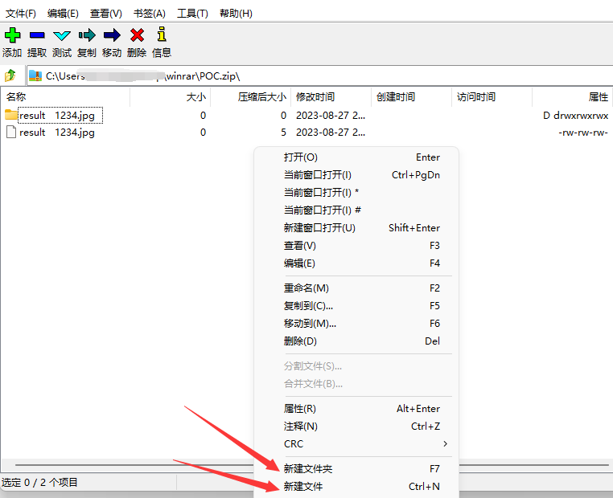
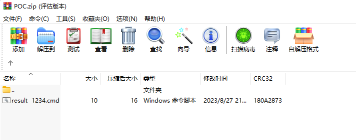
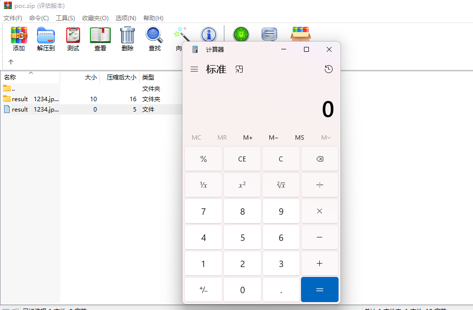
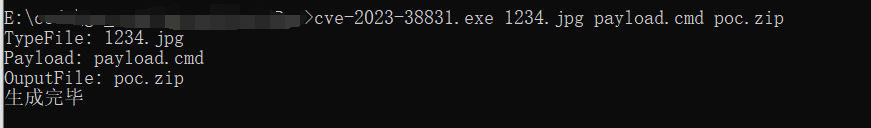

WinRAR 代码执行漏洞复现（CVE-2023-38831）
前言
WinRAR是一个压缩文件的文件压缩程序，因此它们占用的硬盘空间更少。它支持三种压缩格式，ZIP，RAR和新的RAR5格式;在此版本中，RAR5提供了更好的压缩率。它是WinZip或7-Zip的推荐替代品。WinRAR允许您使用256位AES加密算法使用密码保护压缩文件 。近期发现该程序存在代码执行漏洞，下面做一下简单的复现。
声明：**文章中涉及的内容可能带有攻击性，仅供安全研究与教学之用，读者将其信息做其他用途，由用户承担全部法律及连带责任，文章作者不承担任何法律及连带责任。
影响版本
1 | WinRAR <6.23 |
正文
WinRAR 在处理压缩包内同名的文件与文件夹时存在代码执行漏洞。攻击者构建由恶意文件与非恶意文件构成的特制压缩包文件，诱导受害者打开此文件中看似无害的文件（如JPG文件）后，将在受害者机器上执行任意代码。
下载的软件
1 | 7-zip：https://7-zip.org |
制作恶意的压缩文件，可以使用7-zip这个工具，在压缩好的压缩包里面建立一个文件夹，以及一个文件，两者名称需要一致。

然后再把恶意的.cmd文件拖入到文件夹中（名称需要和文件夹一致）

最终用winrar打开的时候双击jpg文件即可执行cmd文件的代码；我这里cmd的代码是
1 | star calc |
成功弹出计算器

POC
后来索性使用go编写一个程序来直接生成恶意的POC文件。
该项目已经开源放到了GitHub了，链接如下：
1 | https://github.com/Garck3h/cve-2023-38831 |
使用起来也很简单，直接使用如下命令可以生成你想要的自定义的poc文件
编译
1 | go build cve-2023-38831.go |
使用
1 | cve-2023-38831.exe 1234.jpg payload.cmd poc.zip |

总结
虽然该漏洞看着危害不是很大，但是很有利于用来钓鱼，从而可以撕开企业的口子。